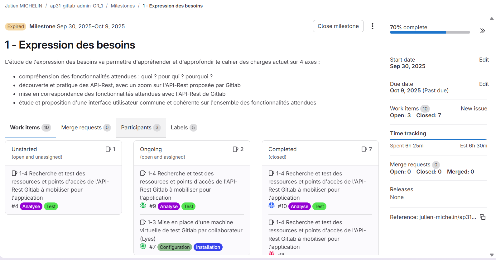
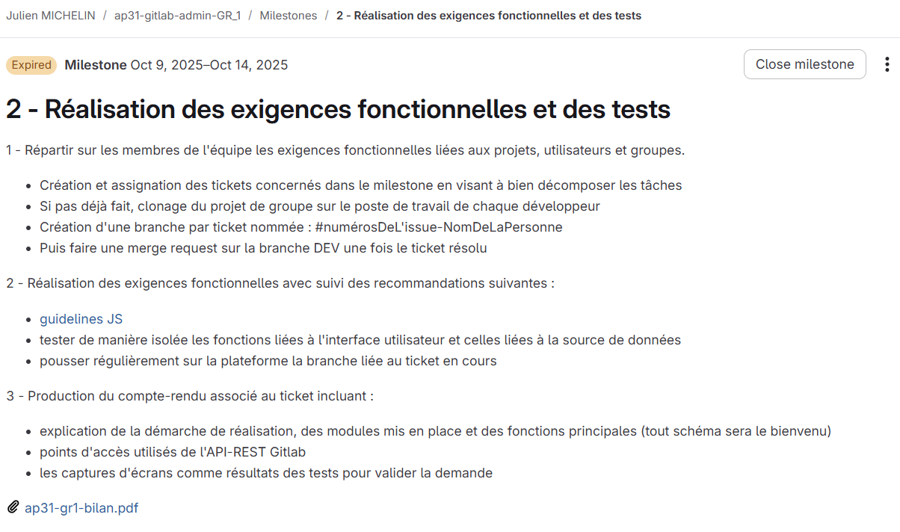
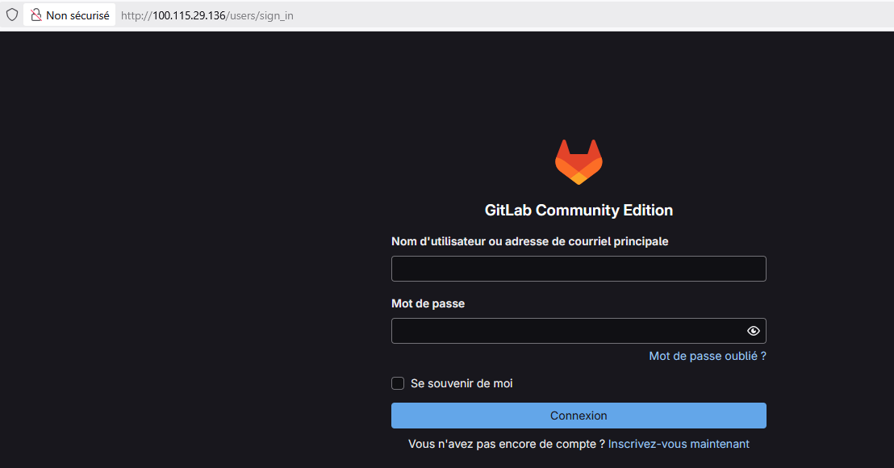
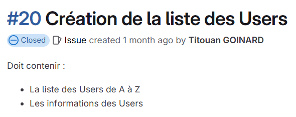
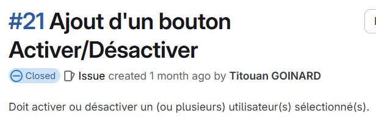

Détail de l'AP
Voici l'organisations du projet :

Les tâches du premier milestone :
Les tâches du deuxième milestone :
La mise en place de l'API gitlab
Le serveur est mis sur VSphere. Il a fallu configurer le serveur US22 en y mettant nos adresses IP, la passerelle et la route.

Après la vérification de la communication avec internet, nous avons téléchargé gitlab sur la machine virtuel. Une fois ces étapes faites, nous avons la possiblité d'ouvrir la page gitlab de la VM en écrivant notre IP.
Étant en groupe, nous nous somme séparés les tâches. Ma partie était sur la création de la page utilisateur du site web. Voici les ajouts et modification que j'ai effectué sur le projet :
 